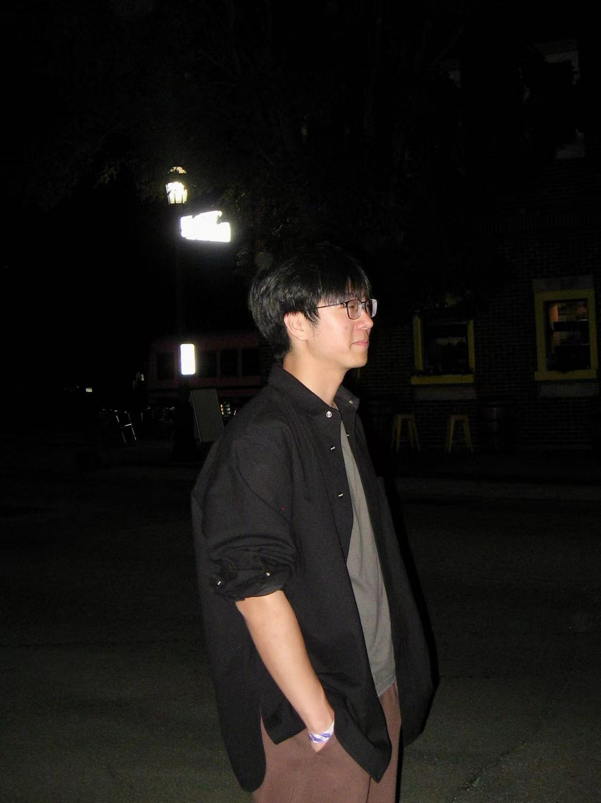

I am a Ph.D. student in Computer Science at the University of Illinois Urbana-Champaign (UIUC), advised by Prof. Yupeng Zhang. I am interested in AI safety and cryptography.

In Music is Our Friend (Live in Washington and Albany, 2021) , Frobert Fripp said, "The world is different, but music remains hope for us all" and here are some pieces of music make me believe the statement is true